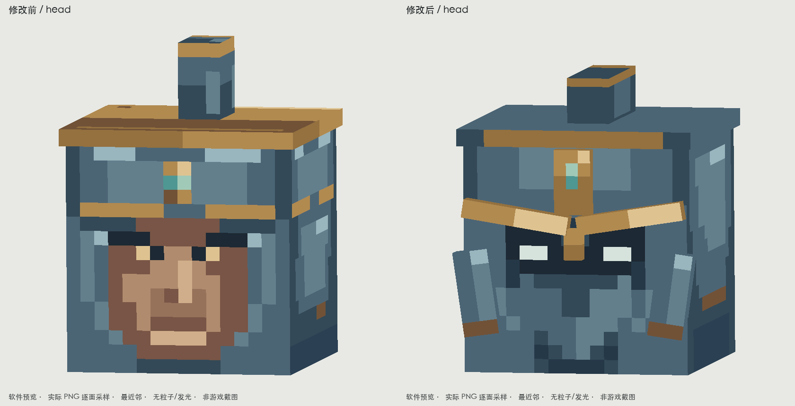
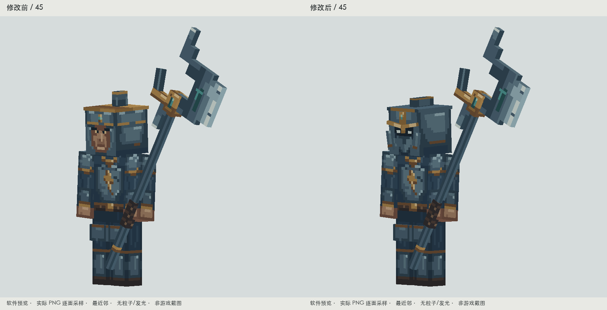
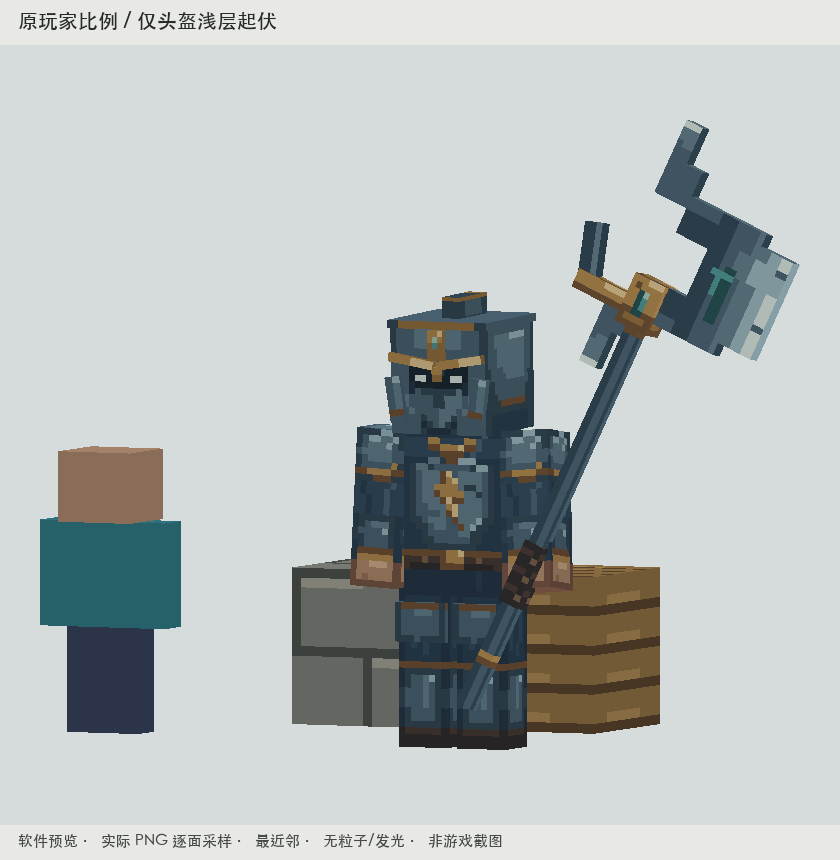
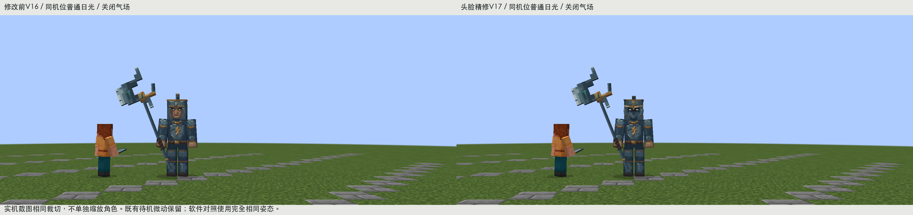
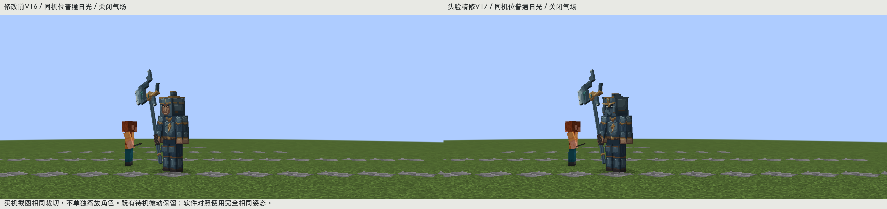
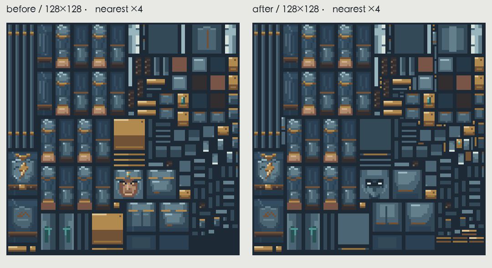

九霄天将：改头脸，不改身体
这次修正的是醒目的肉色鼻口、平盒子头盔与柱状帽顶。面部改为冷铁战斗面甲，窄眼缝位于压低的古金眉甲后；两片浅护颊、额甲和短鼻梁形成实际内外层。旧柱状冠件收为短纵向盔脊。不是重做全身。

左：V16。右：V17。相同相机、相同原色采样、相同头部姿态；无发光。
仅头骨上附加6块薄盔甲，沿用原骨骼；调整原有小盔脊。头部本体仍为原8×8×8比例，身体、持戟、装备布局、碰撞和全部动作时间轴不变。新增面放入128×128图集空区，旧UV没有挪动，头部以外的有效像素逐像素保持。
45度与侧面：真实建模起伏
原身体与大戟

同机位45度对照，未扩大头部或改变全身比例
软件预览，玩家、石砖与木材同场比例
普通日光实机

独立静音Forge测试世界，气场关闭
前后相同机位与裁切，保留既有待机微动
构建通过。14项受控实机检查完成，实际加载的模型、动画和PNG哈希与源资源/JAR一致。离线逐条检查6段动作，每段121个采样点通过地面与渲染边界检查。没有运行自然战斗或多人联机验收；没有操作用户存档。
完整实机正面 · 实机攻击接触 · 实机倒地 · 范围/UV/导出核对 · 实机加载核对
实际PNG与可编辑源

相同128×128图集，四倍最近邻；仅头盔与脸部区域改变
修改前PNG · 修改后PNG · 最近邻放大PNG · Blockbench模型与内嵌贴图/原动作 · 运行资源包
完整动作
实际看过的参考与落实
灾变 Scylla、Maledictus：看过实际游戏正面、45度、头部裁切和原图集；落实“盔口留暗、眉颊在外”的层次，没有借用触角、长角或面具造型。
Goety使徒、Revelation亚博伦：看过原图集、使徒模型源和亚博伦作者展示；学习小范围眼线与深浅主次。亚博伦是附属内容。展示图小且有光影，未当作PNG金属效果依据。
铁魔法术士：看过火焰术士、死灵术士作者画面，以及冰霜术士等的原图集和兜帽几何；借鉴外围遮挡与窄面部窗口。没有复制巫师帽、村民鼻子或别人的五官。版本、实际查看范围与限制。
自检第一稿仍有下垂眉甲与金色胡须感，已再修。现版把眼窝收窄、眉尖压向中心、下半脸改为低对比铁面，并降低原帽顶。权威生成源为 tools/art/tianjiang-helmet-v17/export.py；V15/V16旧导出入口均转到此源，重复导出资源一致。